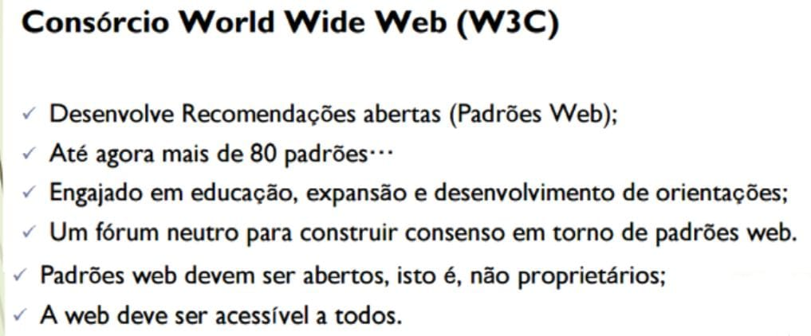
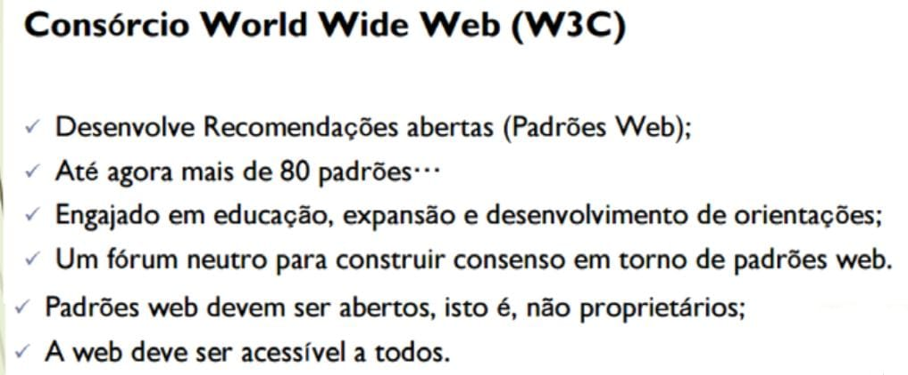

HTML (Hyper Text Markup Language) é uma Linguagem de Marcação de Hipertexto utilizada para criação de páginas da Web. Essa é a linguagem que o seu navegador (Browser) decodifica para exibir as páginas. (FERREIRA & EIS, ONLINE, p.7)
Hipertexto pode ser definido como todo o conteúdo o qual se encontra inserido em um documento para a web, sendo que sua principal característica seria a possibilidade de se interligar a outros documentos também na web. (SILVA, 2011, p.20)
O HTML é baseado no conceito de Hipertexto. Hipertexto são conjuntos de elementos – ou nós – ligados por conexões. Estes elementos podem ser palavras, imagens, vídeos, áudio, documentos etc.
Com a linguagem HTML é possível desenvolver toda a estruturação do conteúdo da mesma (título, subtítulo, posicionamento de imagens, tabelas, etc). (W3CSCHOOL, ONLINE)
As páginas criadas em html são visualizadas pelos navegadores
Desde a invenção da web em 1992 por Tim Berners-Lee, a HTML evoluiu a cada versão lançada, sendo a versão mais atual a HTML5. (SILVA, 2011, p.21)

O W3C (World Wide Web Consortium), criado em outubro de 1994 por Tim Berners-Lee, é um consórcio internacional formado por empresas, instituições, pesquisadores, desenvolvedores e público em geral. A finalidade desse consórcio é desenvolver a web a seu potencial máximo, criando normas, especificações e padronizações que se aplicam aos mais diversos segmentos e setores da web. (W3C, ONLINE)
Durante os próximas anos, o W3C publicou várias especificações (chamadas “recomendações”) incluindo o HTML, o formato de imagens PNG, e as Folhas de Estilo em Cascata versões 1 e 2.
 


W3Schools é um site para desenvolvedores web, onde você pode encontrar tutoriais e referências das linguagens de desenvolvimento para web, assim como HTML, CSS, JavaScript, PHP, SQL, W3.CSS e Bootstrap.
Uma curiosidade a respeito da evolução do HTML é que em um workshop da W3C em 2004 as empresas Mozila e Opera apresentaram uma proposta para evolução do HTML4 para o HTML5, mas a W3C se recusou a dar continuidade a essa ideia.
Mas pouco tempo depois, as empresas Fundação Mozila, Apple e Opera anunciaram a criação de uma organização que visava a evolução do HTML, tal organização foi denominada WHATWG, a qual passou a desenvolver a linguagem XHTML.
Versão do HTML chegou incorporada com novos elementos, atributos e comportamentos.
CSS (Cascading Style Sheets — Folhas de Estilos em Cascata) é uma extensão da HTML, uma linguagem de estilo, ou seja, fazendo o uso dessa linguagem é possível definir como o conteúdo dos elementos HTML serão apresentados na página da Web. Essa extensão foi incorporada à linguagem HTML a partir de sua quarta versão em 1997.
O CSS3 (que vamos aprender) é a segunda versão da linguagem CSS.
Separar o conteúdo do documento HTML de sua formatação.
Forma antiga de se formatar conteúdos:
< font size=“12” color=“blue”>TEXTO AZUL TAMANHO 12< /font>
Ou seja, se você tivesse 10 tipos diferentes de fontes em uma mesma página, então teria de fazer esta formatação 10 vezes. Até que fazer isto em uma só página, tudo bem, mas se o site tivesse 100 páginas então seria muito trabalhoso manter e alterar estas fontes, não acha?
Controle do layout de diversos documentos utilizando apenas uma folha de estilos.
Maior precisão no controle do layout e design
Aplicação de diferentes layouts para adaptação do conteúdo e design em diferentes formas de apresentação (impressoras, telas de diferentes tamanhos, etc.) (W3CSCHOOL, ONLINE)
Os editores HTML são os softwares que utilizamos para criar as páginas da web empregando as linguagens de marcação e de estilo. Tais editores possuem diversas funcionalidades que auxiliam no processo de desenvolvimento da página, proporcionando, por exemplo a visualização do projeto tanto em linhas de códigos quanto em design de apresentação.
A extensão .html é a mais usual e comum hoje em dia. A extensão .htm é mais antiga, época em que o sistema DOS era um dos mais utilizados e só aceitava extensões de arquivos que contivessem 3 caracteres (por exemplo: doc, txt, exe…)